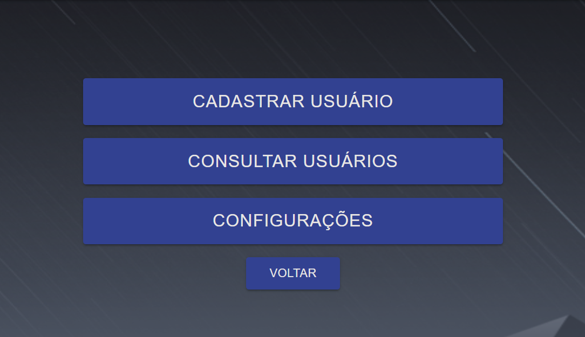
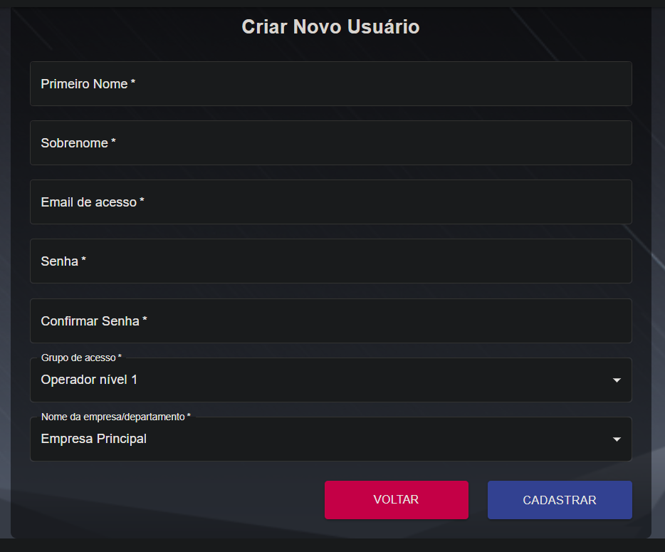
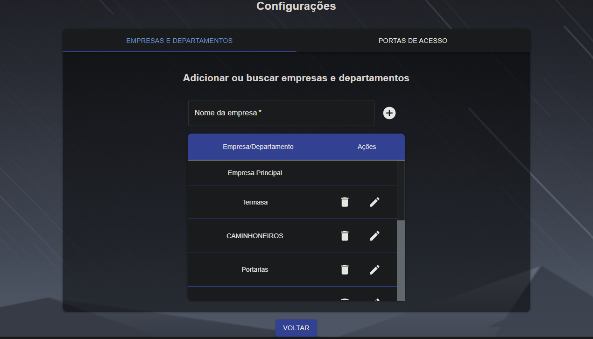
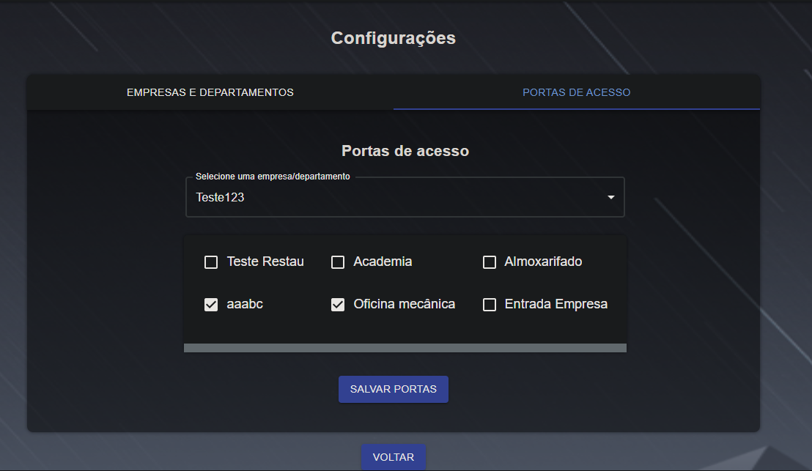
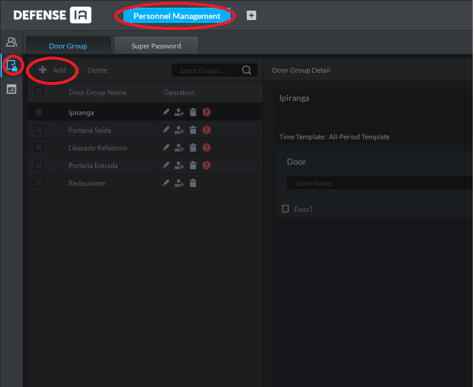

Configurações
Cadastrar e consultar usuários de acesso. Configurações de empresa/departamento e portas de acesso.

Cadastrar usuários

Ao cadastrar um novo usuário de acesso, é necessário preencher todas as informações solicitadas e atribuir qual o nível de acesso este usuário possuí. Nível de acesso “Operador nível 1” da permissão ao usuário para cadastrar e consultar visitantes e verificar visitantes em tempo real. Grupo de acesso “Operador nível 2” da permissão a este usuário de cadastrar e consultar funcionários e visitantes, além de permitir visualizar visitas em tempo real e histórico de acessos. O Grupo de acesso “Operador nível 3” tem as mesmas permissões que o grupo de acesso “Operador nível 2”, porém também consegue visualizar os cadastros distribuídos entre as diferentes companhias criadas. No campo “Nome da companhia” é possível atribuir a qual empresa/departamento este usuário está vinculado. Ao vincular um usuário a uma companhia, ele só poderá cadastrar novos funcionários/visitantes para a sua mesma companhia e só poderá vincular funcionários/visitantes aos grupos de portas que aquela empresa foi relacionada previamente. Além disso, ele não poderá visualizar cadastros vinculados a outras companhias. (excesso usuário de acesso “Operador nível 3”). Ex: Um usuário de acesso da “Empresa 1” não poderá consultar os visitantes da “Empresa 2”.

Diferentes usuários e suas respectivas permissões
Para realizar o login com o novo usuário de acesso criado, é necessário a utilização do email + senha atribuídas ao mesmo.
Empresas/departamentos

Aqui pode-se criar diferentes empresas/departamentos para melhor organização dos usuários do sistema. Esta função é utilizada quando se deseja que usuários de uma certa empresa/departamento não sejam visualizados pelos usuários de outra empresa/departamento.
Portas de Acesso

Nesta interface é feito o relacionamento entre empresas/departamentos e grupo de portas. Ao fazer esta relação, funcionários e visitantes registrados a estas empresas só poderão ter acesso ao grupo de portas a ela relacionadas.

Só serão listados os grupos de portas configurados através do client do Defense IA. Através do menu Gerenciamento de pessoas > Permissão de controle de acesso > Adicionar.